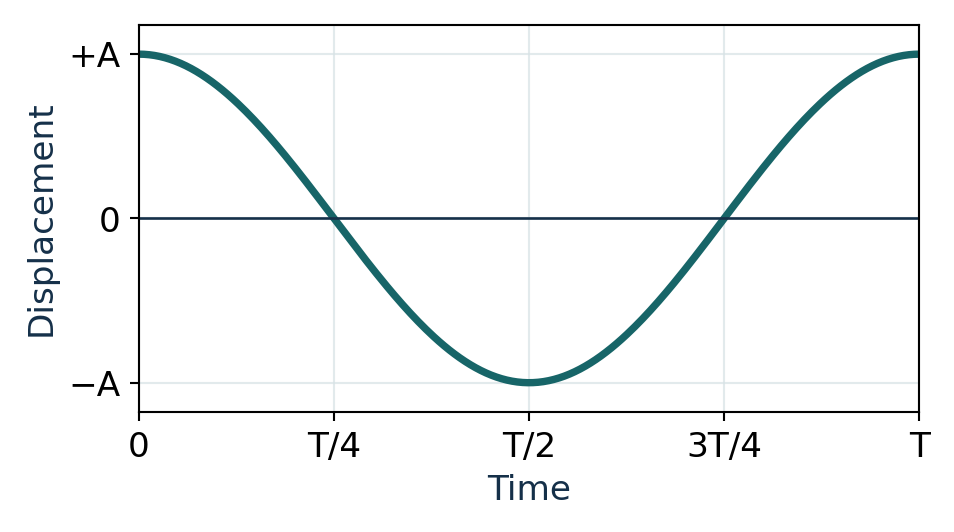
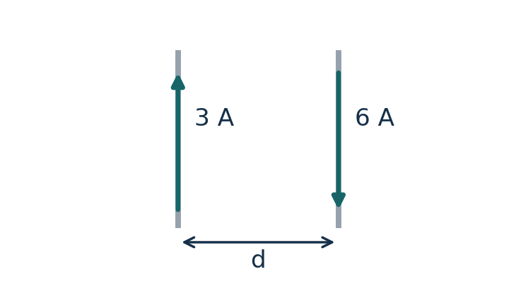
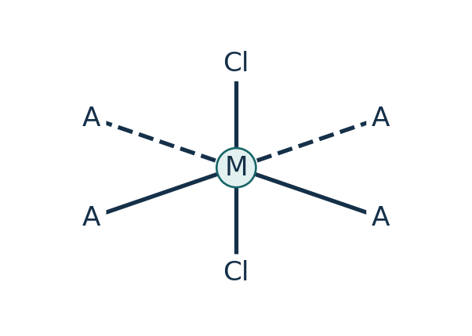
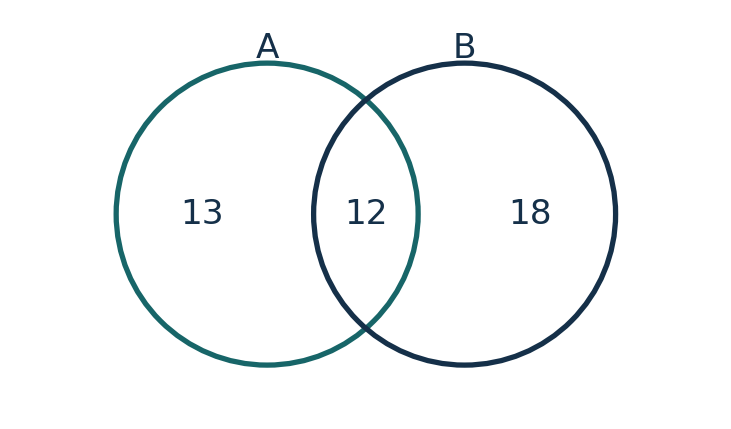

COMEDK UGET Test 2
180 minutes · 180 questions · +1 per correct answer · No negative marking
Physics
Q001. A reaction converts nuclei with an average binding energy of 7.6 MeV per nucleon into nuclei averaging 8.1 MeV per nucleon. There are 40 nucleons in all and none are lost. What is the energy balance?
A) 20 MeV released
B) 20 MeV absorbed
C) 0.5 MeV released
D) 324 MeV released
Worked solution
Answer: (A) 20 MeV released
Why and working: The products are more tightly bound. The net binding increase is 40(8.1−7.6)=20 MeV, supplied to the surroundings.
Why not the others: (B) reverses the sign. (C) uses the change for one nucleon. (D) uses the full product binding rather than the difference.
Q002. Two spheres attract each other with force F. One mass triples and the centre separation doubles. What is the new force?
A) 3F/2
B) 3F/4
C) F/4
D) 12F
Worked solution
Answer: (B) 3F/4
Why and working: F=Gm₁m₂/r², so the mass change multiplies the force by 3 and the separation change divides it by 4.
Why not the others: (A) uses inverse distance. (C) omits the mass change. (D) inverts the separation effect.
Q003. When a p–n junction initially forms, what produces the electric field in the depletion layer?
A) A uniform excess of electrons throughout both bulk regions
B) Fixed ionised dopants exposed by carrier diffusion
C) Mobile holes accumulating permanently at the junction
D) A battery connected across the junction
Worked solution
Answer: (B) Fixed ionised dopants exposed by carrier diffusion
Why and working: Carrier diffusion and recombination uncover fixed donors and acceptors. Their space charge produces the field.
Why not the others: (A) the bulk remains nearly neutral. (C) the layer is depleted of mobile carriers. (D) a built-in field exists at zero bias.
Q004. On one electric field line, an electron placed at rest initially accelerates west. An arrow on that line must point which way at that location?
A) East
B) West
C) North
D) It must have no direction
Worked solution
Answer: (A) East
Why and working: The arrow follows the local electric field, which is the force direction for a positive charge. The electron's force is opposite.
Why not the others: (B) identifies field with the negative charge's force. (C) a perpendicular field cannot give the stated force. (D) nonzero acceleration implies a nonzero field.
Q005. A cube experiences a uniform pressure increase of 4 MPa and its volume decreases by 0.2%. What is its bulk modulus?
A) 20 MPa
B) 2 GPa
C) 0.8 MPa
D) 8 GPa
Worked solution
Answer: (B) 2 GPa
Why and working: Bulk modulus equals pressure increase divided by fractional compression. 4×10⁶/0.002=2×10⁹ Pa.
Why not the others: (A) treats the percent conversion incorrectly. (C) multiplies instead of dividing by the fractional change. (D) uses a volume strain four times too small.
Q006. Three charges lie on a straight line, at x=0, a, and 2a. Their values are +q, +q, and −2q. What work must an external agent do to bring the middle charge from infinity to its site while the end charges are held fixed?
A) −2kq²/a
B) 0
C) −kq²/a
D) −kq²/(2a)
Worked solution
Answer: (C) −kq²/a
Why and working: The other two charges give potential kq/a−2kq/a=−kq/a at the site. Multiply by +q. Their mutual energy is already present and does not change.
Why not the others: (A) ignores the positive end charge. (B) treats the magnitudes as equal. (D) incorrectly uses the separation of the end charges.
Q007. A device draws 2 A at 12 V for 10 s. How much electrical energy does it receive?
A) 240 J
B) 24 J
C) 120 J
D) 60 J
Worked solution
Answer: (A) 240 J
Why and working: P=VI=24 W. Multiply by time to get 240 J.
Why not the others: (B) reports power numerically. (C) omits current. (D) divides by current instead of multiplying.
Q008. In an ideal hydraulic lift the output piston area is ten times the input area. A 25 N input force supports what output force at the same height?
A) 25 N
B) 2.5 N
C) 100 N
D) 250 N
Worked solution
Answer: (D) 250 N
Why and working: The pressure F/A transmits equally, so force scales with piston area.
Why not the others: (A) equates the forces instead of pressures. (B) inverts the area ratio. (C) does not use the factor ten.
Q009. Two nearly identical long solenoids carry equal currents. The first has tightly wound turns in the central region, the second has fewer turns per unit length there. Which has the stronger central axial field, qualitatively?
A) The second, because each turn is more isolated
B) Both, because total current is the sole factor
C) The first, because nearby turn contributions reinforce
D) Neither has a central axial field
Worked solution
Answer: (C) The first, because nearby turn contributions reinforce
Why and working: The field contributions from the nearby turns add in the interior. A greater turn density strengthens that field for the same current.
Why not the others: (A) isolation does not enhance the resultant. (B) ignores turn density. (D) contradicts the axial field of a solenoid.
Q010. Outside a bar magnet, two proposed magnetic field lines cross at an ordinary point. Why is this drawing impossible?
A) Field lines outside must be straight
B) Field lines outside cannot form parts of loops
C) It assigns two different tangent directions to one local field
D) Any crossing would make the magnet electrically charged
Worked solution
Answer: (C) It assigns two different tangent directions to one local field
Why and working: A regular point has a single magnetic-field vector, so its field-line tangent is unique.
Why not the others: (A) curved field lines are normal. (B) magnetic field lines close. (D) charge is unrelated to the drawing error.
Q011. A metal plate has a circular hole. It is heated uniformly and freely. If its linear dimensions increase by 1%, approximately how does the hole's area change?
A) It increases by 2%
B) It decreases by 2%
C) It increases by 1%
D) It stays constant
Worked solution
Answer: (A) It increases by 2%
Why and working: The hole radius scales like any in-plane length. Area scales as the square of length, so 1.01²−1 is about 0.02.
Why not the others: (B) assumes expansion fills the hole. (C) uses linear rather than areal expansion. (D) ignores the increased diameter.
Q012. The current in a 0.8 H inductor decreases uniformly from 5 A to 2 A in 0.12 s. What is the magnitude of the self-induced emf?
A) 2.4 V
B) 20 V
C) 25 V
D) 0.096 V
Worked solution
Answer: (B) 20 V
Why and working: The current-change magnitude is 3 A. LΔI/Δt=0.8×3/0.12=20 V.
Why not the others: (A) omits division by time. (C) omits L. (D) uses L times time.
Q013. What happens to the resonant frequency of a series LCR circuit when L is doubled and C is halved?
A) It doubles
B) It is unchanged
C) It halves
D) It increases by √2
Worked solution
Answer: (B) It is unchanged
Why and working: The product LC is unchanged. The resonance condition ω₀=1/√(LC) gives the same frequency.
Why not the others: (A) accounts for a false net change in LC. (C) assumes L alone sets resonance. (D) uses only the change in C.
Q014. A gas expands against a constant pressure of 2.0 × 10⁵ Pa from 2.0 L to 5.0 L. Its internal energy rises by 200 J. What heat flows into it?
A) 400 J
B) −400 J
C) 800 J
D) 200 J
Worked solution
Answer: (C) 800 J
Why and working: The volume change is 3.0 × 10⁻³ m³, giving work by the gas pΔV = 600 J. With ΔU = Q − W, the required heat is Q = 200 + 600 = 800 J.
Why not the others: (A) Subtracting the internal-energy rise from the work does not give heat. (B) This uses the wrong sign for work by the gas. (D) This ignores the work term.
Q015. A point source in air is 30 cm left of a convex spherical surface separating air from glass of index 1.50. Its centre of curvature is 10 cm to the right. Where is its paraxial image measured from the surface?
A) 30 cm to the right
B) 18 cm to the right
C) 90 cm to the left
D) 90 cm to the right
Worked solution
Answer: (D) 90 cm to the right
Why and working: With right positive, n₂/v−n₁/u=(n₂−n₁)/R. Thus 1.5/v+1/30=0.5/10, yielding v=90 cm.
Why not the others: (A) omits one index factor or uses the wrong object term. (B) adds the object term to the curvature term. (C) reverses the image direction.
Q016. In Young's double-slit setup, which change doubles the fringe width when the other parameters are held fixed?
A) Double the slit separation
B) Double the screen distance
C) Halve the wavelength
D) Halve the screen distance
Worked solution
Answer: (B) Double the screen distance
Why and working: Fringe width is λD/d. It is proportional to screen distance.
Why not the others: (A) would halve the width. (C) would halve the width. (D) would halve the width.
Q017. Two identical boxes contain equal numbers of ideal-gas molecules of the same species. In box X their mean square speed is twice that in Y. Which pressure ratio follows?
A) pX/pY=2
B) pX/pY=√2
C) pX/pY=1/2
D) pX/pY=4
Worked solution
Answer: (A) pX/pY=2
Why and working: Kinetic theory gives p=Nm⟨v²⟩/(3V). All factors except ⟨v²⟩ are equal.
Why not the others: (B) uses rms speed instead of mean square speed. (C) inverts the dependence. (D) squares the mean square speed ratio again.
Q018. Two particles have equal nonrelativistic kinetic energies. One has four times the mass of the other. What is its de Broglie wavelength relative to the lighter particle?
A) Double
B) One quarter
C) Equal
D) Half
Worked solution
Answer: (D) Half
Why and working: At common K, p=√(2mK). The heavier particle has twice the momentum and λ=h/p is halved.
Why not the others: (A) uses direct momentum dependence. (B) assumes p scales as mass at fixed K. (C) confuses equal energy with equal momentum.
Q019. Two downward hydrogen transitions terminate at the same level. Transition X starts at a higher level than transition Y. Which has greater photon frequency?
A) Y
B) They are equal
C) X
D) The one with more radiating atoms
Worked solution
Answer: (C) X
Why and working: A higher initial energy at a fixed final energy means a larger energy gap. ν=ΔE/h therefore ranks X higher.
Why not the others: (A) reverses the gap ranking. (B) a common final level does not fix the gap. (D) atom count can change intensity.
Q020. The graph shows the displacement of a body in SHM. What is its state at the first zero crossing after t = 0?

A) At equilibrium moving in the negative direction
B) At equilibrium moving in the positive direction
C) At the negative extreme and stationary
D) At the positive extreme and stationary
Worked solution
Answer: (A) At equilibrium moving in the negative direction
Why and working: In x=Acosωt, t=T/4 gives x=0 and v=−Aω.
Why not the others: (B) uses the velocity at 3T/4. (C) describes T/2. (D) describes t=0.
Q021. A nuclear process begins when a heavy nucleus absorbs a neutron. It produces two medium-mass nuclei and releases additional free neutrons. What makes this process potentially self-sustaining?
A) The medium-mass products must fuse into the original nucleus after every event
B) Every neutron is necessarily captured without causing a reaction
C) The chain is carried by electrons rather than neutrons
D) Some emitted neutrons can induce further fissions
Worked solution
Answer: (D) Some emitted neutrons can induce further fissions
Why and working: Fission splits the heavy nucleus. Its released neutrons can induce fission in further heavy nuclei if enough avoid capture and escape.
Why not the others: (A) reverses the process. (B) capture can induce fission. (C) neutrons carry the fission chain.
Q022. Which observation is consistent with the characteristic of an ordinary junction diode away from reverse breakdown?
A) Substantial forward current can flow while reverse current remains very small
B) Forward and reverse currents are equal in magnitude for every equal voltage magnitude
C) Forward bias always increases the depletion barrier
D) A substantial reverse current is necessary at zero bias
Worked solution
Answer: (A) Substantial forward current can flow while reverse current remains very small
Why and working: Forward bias lowers the junction barrier. Reverse bias raises it and ordinarily leaves a small leakage current.
Why not the others: (B) assumes an ohmic symmetric element. (C) gets barrier change backwards. (D) zero bias has no net diode current.
Q023. A progressive transverse wave is y=0.03 sin(8πt−2πx), with x in metres and t in seconds. What distance does a crest move as a fixed point completes three cycles?
A) 3 m
B) 12 m
C) 0.75 m
D) 1 m
Worked solution
Answer: (A) 3 m
Why and working: The wave travels toward +x. Its wavelength is 2π/(2π)=1 m and frequency 4 Hz. Three cycles take 0.75 s, during which a crest advances 4×0.75=3 m.
Why not the others: (B) uses three seconds instead of three cycles. (C) reports elapsed time numerically. (D) counts just one cycle.
Q024. An electric dipole of moment p is at 30° to a uniform field E and feels torque magnitude τ. The dipole moment is doubled without rotating it, and the field direction is reversed. What happens to its torque vector?
A) It reverses with unchanged magnitude
B) It doubles without reversing
C) It becomes zero
D) It reverses and doubles in magnitude
Worked solution
Answer: (D) It reverses and doubles in magnitude
Why and working: Since the torque is p×E, the new torque is (2p)×(−E)=−2(p×E).
Why not the others: (A) omits the increased moment. (B) ignores the reversed field. (C) the vectors remain non-collinear.
Q025. An isolated neutral conductor is placed in a static external field. In electrostatic equilibrium what is the field inside its metal?
A) Zero
B) Uniform and equal to the external field
C) Twice the unperturbed external field
D) Always directed toward its centre
Worked solution
Answer: (A) Zero
Why and working: Free charge redistributes until the total field inside is zero.
Why not the others: (B) ignores the response of free charges. (C) assumes induced and applied fields reinforce inside. (D) a residual interior field would move charge.
Q026. A rectangle has measured sides 4.27 cm and 2.1 cm. How should its measured area be reported using the multiplication rule for significant figures?
A) 9.0 cm²
B) 8.967 cm²
C) 8.97 cm²
D) 9 cm²
Worked solution
Answer: (A) 9.0 cm²
Why and working: The product is 8.967 cm². The limiting side has two significant figures, so report 9.0 cm².
Why not the others: (B) keeps four figures. (C) keeps three figures. (D) keeps only one figure.
Q027. Near a reference temperature, a metal wire has temperature coefficient 0.0040 K⁻¹. Neglect geometry changes. Its resistance is 50 Ω at the reference. What is it 25 K higher?
A) 55 Ω
B) 50.1 Ω
C) 45 Ω
D) 62.5 Ω
Worked solution
Answer: (A) 55 Ω
Why and working: Use R=R₀(1+αΔT). The fractional rise is 0.0040×25=0.10, giving 55 Ω.
Why not the others: (B) adds the fraction as a resistance. (C) uses a negative coefficient. (D) uses 25% without α.
Q028. A beam of ions crosses perpendicular electric and magnetic fields without deflection. The directions of the fields stay fixed and both magnitudes double. Which speed is selected now?
A) Twice the speed
B) Half the speed
C) Four times the speed
D) The same speed
Worked solution
Answer: (D) The same speed
Why and working: At no deflection qE=qvB in magnitude. Since E/B stays constant, so does the selected speed.
Why not the others: (A) increases E alone. (B) increases B alone. (C) uses the product of field magnitudes.
Q029. A car's position is x=2t² metres for 0≤t≤4 s. What is its instantaneous speed at t=4 s compared with its average speed on this interval?
A) Equal to the average
B) Half the average
C) Twice the average
D) Four times the average
Worked solution
Answer: (C) Twice the average
Why and working: Speed at 4 s is dx/dt=4t=16 m/s. The interval average is (32−0)/4=8 m/s.
Why not the others: (A) would arise for constant speed. (B) inverts the ratio. (D) uses a wrong average.
Q030. A sample is weakly attracted by a strong magnet and shows essentially no retained magnetisation after removal of the field. Which description best fits this evidence?
A) Diamagnetic response
B) Strong permanent ferromagnetic response
C) Perfect exclusion of the applied field
D) Paramagnetic response
Worked solution
Answer: (D) Paramagnetic response
Why and working: A paramagnet acquires a small magnetisation along the field and loses it when the field is removed.
Why not the others: (A) would produce weak repulsion. (B) would retain a substantial moment. (C) weak attraction is not perfect field exclusion.
Q031. An ideal secondary coil of 15 Ω is coupled to a primary by mutual inductance 0.30 H. The primary current changes from +5 A to −1 A in 40 ms at a constant rate. Neglect the secondary's self-inductance. What current magnitude is induced in it?
A) 0.05 A
B) 2 A
C) 45 A
D) 3 A
Worked solution
Answer: (D) 3 A
Why and working: The primary current change has magnitude 6 A. The induced emf is 0.30×6/0.040=45 V, which gives 45/15=3 A.
Why not the others: (A) does not convert milliseconds correctly. (B) uses the difference of current magnitudes. (C) reports emf instead of dividing by resistance.
Q032. Vectors u and v are nonparallel. If (a+1)u+(b−2)v=2(3u−v), what is a+b?
A) 7
B) 9
C) 3
D) 5
Worked solution
Answer: (D) 5
Why and working: Nonparallel vectors are linearly independent. Compare coefficients: a+1=6 and b−2=−2, giving a=5 and b=0.
Why not the others: (A) uses a=7 or b=2. (B) incorrectly carries a positive coefficient for v. (C) subtracts 2 from a without justification.
Q033. An ideal inductor is connected alone to a sinusoidal source in steady state. Its average real power is what?
A) V_rms I_rms
B) Zero
C) V_rms I_rms/2
D) Negative throughout the cycle
Worked solution
Answer: (B) Zero
Why and working: The phase difference is 90° and average power is VIcosφ. Energy is returned each cycle.
Why not the others: (A) assumes zero phase difference. (C) applies the wrong power factor. (D) instantaneous power changes sign.
Q034. In air a thin symmetric biconvex lens has focal length f. Its two radii of curvature are both doubled in magnitude while its material stays the same. What is its new focal length?
A) f/2
B) 4f
C) 2f
D) f
Worked solution
Answer: (C) 2f
Why and working: The lens-maker curvature difference scales inversely with the common radius scale, halving the power. The focal length therefore doubles.
Why not the others: (A) scales focal length like power. (B) assumes a square scaling. (D) ignores the change in curvature.
Q035. A ball of mass 0.20 kg moving at 6 m/s strikes a wall normally and rebounds at 4 m/s. What is the magnitude of the impulse on it?
A) 2.0 N·s
B) 0.4 N·s
C) 1.2 N·s
D) 0.8 N·s
Worked solution
Answer: (A) 2.0 N·s
Why and working: Take the incoming direction positive. Δp=0.20(−4−6)=−2.0 kg m/s. The magnitude is 2.0.
Why not the others: (B) does not reverse velocity. (C) uses initial momentum alone. (D) uses final momentum alone.
Q036. A single-slit diffraction screen shows a central bright maximum. With wavelength and screen distance fixed, what happens when the slit becomes narrower?
A) It narrows
B) Its width is unchanged
C) The central maximum disappears
D) The central maximum broadens
Worked solution
Answer: (D) The central maximum broadens
Why and working: A narrower opening produces greater angular spreading, so the central maximum broadens.
Why not the others: (A) reverses the width relationship. (B) ignores slit width. (C) there is still a central maximum.
Q037. An ideal diode and resistor form a half-wave rectifier. The diode is turned around, with the input and output reference unchanged. What happens to the voltage across the resistor?
A) Both half-cycles now appear
B) The same half-cycles still appear
C) The passed half-cycles reverse polarity
D) The voltage becomes constant DC
Worked solution
Answer: (C) The passed half-cycles reverse polarity
Why and working: Reversal changes which input polarity forward biases the diode and therefore which half-cycle reaches the load.
Why not the others: (A) requires full-wave rectification. (B) ignores diode orientation. (D) a single diode provides no smoothing.
Q038. A motor lifts a 600 N load vertically at 0.50 m/s at steady speed. Its input is 500 W. What fraction of its input reaches the load as mechanical power?
A) 0.30
B) 0.83
C) 1.67
D) 0.60
Worked solution
Answer: (D) 0.60
Why and working: Useful power is Fv=600×0.50=300 W. Divide by 500 W to get 0.60.
Why not the others: (A) uses the power loss incorrectly. (B) divides input power by force. (C) inverts the efficiency ratio.
Q039. A closed surface surrounds an electric dipole, with both charges inside. What is its net electric flux?
A) q/ε₀
B) Zero
C) 2q/ε₀
D) A nonzero value depending on dipole direction
Worked solution
Answer: (B) Zero
Why and working: The enclosed signed charge is +q−q=0, so Gauss's law gives zero net flux.
Why not the others: (A) counts only the positive charge. (C) adds magnitudes. (D) orientation changes the distribution, not total flux.
Q040. A charged parallel-plate capacitor is disconnected from its source. A dielectric fills the gap. Which explanation correctly predicts the change in plate voltage?
A) It falls because the polarisation field opposes the field from fixed free charge
B) It rises because polarisation increases the free charge
C) It stays constant because the charge stays constant
D) It falls because free charge leaks to the source
Worked solution
Answer: (A) It falls because the polarisation field opposes the field from fixed free charge
Why and working: Free electrode charge stays fixed. Polarisation lowers the net field and V=Ed falls, equivalently V=Q/C with larger C.
Why not the others: (B) the electrode charge cannot increase through a disconnected source. (C) fixed Q does not fix V as C changes. (D) the source is disconnected.
Q041. A particle moving east passes south of a point O. An impulse due north acts on the particle at that instant, with the position effectively fixed. How does the impulse change its angular momentum about O?
A) It increases the upward component
B) It increases the downward component
C) It reverses the angular momentum
D) It does not change it
Worked solution
Answer: (D) It does not change it
Why and working: The position vector from O points south and the impulse points north. Their cross product is zero, so ΔL=r×J=0.
Why not the others: (A) requires a nonzero transverse impulse. (B) also requires a nonzero moment arm. (C) a zero change cannot flip nonzero L.
Q042. A cell of emf E and internal resistance r supplies current I. What is its terminal voltage?
A) E+Ir
B) Ir−E
C) E−Ir
D) E/I
Worked solution
Answer: (C) E−Ir
Why and working: The internal resistance drops Ir in the delivery direction, leaving E−Ir.
Why not the others: (A) corresponds to the charging-sign relation. (B) reverses the terminal polarity convention. (D) has resistance units.
Q043. A 0.40 m straight wire carries 5 A in a uniform 0.50 T field. It makes 30° with the field. What is the magnetic-force magnitude?
A) 1.0 N
B) 0.87 N
C) 0.50 N
D) 0.25 N
Worked solution
Answer: (C) 0.50 N
Why and working: Use F=BILsinθ. The maximum BIL is 1.0 N and sin30°=0.50.
Why not the others: (A) assumes a right angle. (B) uses cos30°. (D) uses the sine factor twice.
Q044. At what height above Earth's spherical surface does g become 4/9 of its surface value? Earth radius is R.
A) R/3
B) 3R/2
C) R/2
D) 5R/4
Worked solution
Answer: (C) R/2
Why and working: g(h)/g(0)=[R/(R+h)]²=4/9. Taking positive roots gives R+h=3R/2, hence h=R/2.
Why not the others: (A) uses a wrong distance ratio. (B) reports the radius from Earth's centre. (D) omits the square-root step.
Q045. A ferromagnetic sample is heated well above its Curie temperature. What happens to its spontaneous ferromagnetic order?
A) It becomes stronger
B) It disappears and the response is paramagnetic
C) It becomes perfectly diamagnetic
D) It becomes temperature independent
Worked solution
Answer: (B) It disappears and the response is paramagnetic
Why and working: Thermal disorder destroys long-range spontaneous alignment above the Curie point.
Why not the others: (A) heat disrupts alignment. (C) loss of order does not give perfect diamagnetism. (D) the Curie transition shows temperature dependence.
Q046. A coil in a generator rotates at constant angular speed. When the flux through it has its greatest positive value, what is the instantaneous induced emf?
A) At its positive maximum
B) At its negative maximum
C) Zero
D) Half its maximum magnitude
Worked solution
Answer: (C) Zero
Why and working: The emf is minus the time derivative of flux. At the flux maximum that derivative vanishes.
Why not the others: (A) confuses flux with its derivative. (B) confuses flux with its derivative and sign. (D) the stationary point gives zero exactly.
Q047. Two blocks of identical shape are held at their bases and subjected to equal sideways force per unit area on top. Block X shears through the smaller angle. Which has the larger shear modulus?
A) Y
B) They must have the same modulus
C) The one with the smaller volume regardless of shear strain
D) X
Worked solution
Answer: (D) X
Why and working: At equal shear stress, larger shear modulus means smaller shear strain. The smaller angle indicates the smaller strain.
Why not the others: (A) inverts the stress-strain ratio. (B) equal stress does not imply equal strain. (C) volume alone does not determine shear stiffness.
Q048. A converging lens has power +4 D and forms a real image twice as high as the object in magnitude. What are the positive object and image distances?
A) 25 cm and 50 cm
B) 37.5 cm and 75 cm
C) 75 cm and 37.5 cm
D) 50 cm and 100 cm
Worked solution
Answer: (B) 37.5 cm and 75 cm
Why and working: f=1/4 m=25 cm. With v=2u, 1/f=1/u+1/(2u), so u=37.5 cm and v=75 cm.
Why not the others: (A) places the object at the focus. (C) swaps object and image distances. (D) has focal length 33.3 cm.
Q049. An infinite straight line carries uniform charge λ. A coaxial cylindrical Gaussian surface of radius r and length L is replaced by one of radius 2r and length 2L. What are the factors by which total flux and surface field magnitude change?
A) 2 and 1/2
B) 1 and 1/2
C) 2 and 1/4
D) 4 and 1/2
Worked solution
Answer: (A) 2 and 1/2
Why and working: Enclosed charge scales with length, so flux doubles. Flux is E·2πrL as caps contribute zero. L and r together quadruple the area, so E halves.
Why not the others: (B) ignores the change in enclosed length. (C) uses inverse-square behaviour for a line. (D) treats flux as proportional to area alone.
Q050. A sphere moves slowly through a liquid in the Stokes regime. With radius and speed fixed, what happens to its drag if viscosity doubles?
A) It halves
B) It doubles
C) It quadruples
D) It stays unchanged
Worked solution
Answer: (B) It doubles
Why and working: Stokes drag is 6πηrv, linear in viscosity at fixed r and v.
Why not the others: (A) inverts the dependence. (C) squares the viscosity. (D) ignores viscosity.
Q051. A 3 μF and a 6 μF capacitor are connected in parallel. What is their equivalent capacitance?
A) 2 μF
B) 9 μF
C) 4.5 μF
D) 18 μF
Worked solution
Answer: (B) 9 μF
Why and working: Parallel capacitors share the voltage and their charges add, so capacitances add.
Why not the others: (A) uses the series value. (C) takes the arithmetic mean. (D) multiplies values with incompatible units.
Q052. Two identical cells, each 1.5 V with 0.60 Ω internal resistance, are connected in parallel in the same polarity. What is the equivalent emf and internal resistance?
A) 3.0 V and 1.20 Ω
B) 3.0 V and 0.30 Ω
C) 1.5 V and 1.20 Ω
D) 1.5 V and 0.30 Ω
Worked solution
Answer: (D) 1.5 V and 0.30 Ω
Why and working: Equal emfs in parallel retain their voltage. The equal internal resistances act in parallel and halve.
Why not the others: (A) uses series rules. (B) adds parallel emfs incorrectly. (C) adds the internal resistances as if in series.
Q053. A lake cools from 6°C toward freezing. Why can warmer liquid remain below near 4°C while the surface freezes?
A) Water is least dense at 4°C
B) Water near 4°C is denser than water nearer 0°C
C) Ice sinks and displaces warmer water downwards
D) The density of liquid water rises continually as temperature approaches 0°C
Worked solution
Answer: (B) Water near 4°C is denser than water nearer 0°C
Why and working: Water has a maximum density near 4°C. Colder liquid above it is less dense and remains at the surface.
Why not the others: (A) reverses the density extremum. (C) ice normally floats. (D) ignores anomalous expansion below 4°C.
Q054. The diagram shows two parallel long wires and their currents. Their separation is tripled with the currents unchanged. How does the pair’s magnetic force per length change?

A) It becomes attractive and one third as large
B) It remains repulsive and becomes one third as large
C) It remains repulsive and becomes one ninth as large
D) It remains repulsive and becomes three times as large
Worked solution
Answer: (B) It remains repulsive and becomes one third as large
Why and working: Opposite currents repel. F/L=μ₀I₁I₂/(2πd), so tripling d divides it by three.
Why not the others: (A) reverses the current-direction rule. (C) uses inverse square. (D) uses direct proportionality.
Q055. An ideal transformer takes 240 V rms to 12 V rms and supplies a 3 A rms resistive load. What primary current is required?
A) 60 A
B) 3 A
C) 0.15 A
D) 0.60 A
Worked solution
Answer: (C) 0.15 A
Why and working: Input and output power are equal: 240 Iₚ=12×3, giving 0.15 A.
Why not the others: (A) uses the voltage ratio in the wrong direction. (B) ignores the voltage transformation. (D) uses an incorrect voltage ratio.
Q056. A gas is cooled at constant volume and gives up 70 J of heat. What is its internal energy change?
A) +70 J
B) Zero
C) −140 J
D) −70 J
Worked solution
Answer: (D) −70 J
Why and working: At constant volume boundary work is zero. With heat leaving, ΔU=Q=−70 J.
Why not the others: (A) uses the incoming-heat sign. (B) confuses no work with no energy change. (C) double counts energy transfer.
Q057. A +5 D lens is in contact with an unknown thin lens. For a real object at 25 cm, the combination forms a real image at 50 cm. What is the unknown power?
A) +6 D
B) +1 D
C) −1 D
D) −3 D
Worked solution
Answer: (B) +1 D
Why and working: The combination needs 1/0.25+1/0.50=6 D. Powers in contact add, so the unknown is 6−5=+1 D.
Why not the others: (A) reports the combination power. (C) subtracts in reverse order. (D) uses a wrong reciprocal-distance balance.
Q058. Two infinite parallel nonconducting sheets with charge densities +σ and +3σ bound a gap. A point is in the gap. What electric field is present there?
A) 2σ/ε₀ toward the +σ sheet
B) σ/ε₀ toward the +3σ sheet
C) σ/ε₀ toward the +σ sheet
D) 2σ/ε₀ toward the +3σ sheet
Worked solution
Answer: (C) σ/ε₀ toward the +σ sheet
Why and working: Each sheet contributes σᵢ/(2ε₀) away from itself. In the gap the contributions oppose. The larger sheet dominates by (3σ−σ)/(2ε₀) toward the weaker one.
Why not the others: (A) uses the summed magnitude or omits the half. (B) assigns the weaker sheet's direction. (D) adds contributions and reverses direction.
Q059. The absolute temperature of a fixed gas species is quadrupled. How does its rms molecular speed change?
A) It quadruples
B) It halves
C) It doubles
D) It is unchanged
Worked solution
Answer: (C) It doubles
Why and working: v_rms=√(3RT/M), so it grows by √4.
Why not the others: (A) uses a linear temperature law. (B) uses inverse dependence. (D) ignores temperature.
Q060. A parallel-plate capacitor stays on a constant-voltage source while its plate separation is doubled. The area and dielectric medium stay fixed. What happens to its stored charge?
A) It halves
B) It doubles
C) It stays fixed
D) It falls to one quarter
Worked solution
Answer: (A) It halves
Why and working: C=εA/d halves. With V fixed, Q=CV halves as well.
Why not the others: (B) uses direct dependence on separation. (C) assumes a disconnected capacitor. (D) uses inverse-square rather than inverse scaling.
Chemistry
Q061. An ideal dilute solution contains 2 mol nonvolatile solute in 98 mol solvent. What is its relative vapour-pressure lowering?
A) 0.980
B) 0.040
C) 0.020
D) 0.200
Worked solution
Answer: (C) 0.020
Why and working: Raoult's law gives (p°−p)/p°=x_solute=2/(98+2).
Why not the others: (A) uses mole fraction of solvent. (B) doubles the mole fraction. (D) shifts the decimal.
Q062. Which ion is largest among the isoelectronic species O²⁻, F⁻, Na⁺ and Mg²⁺?
A) F⁻
B) Na⁺
C) Mg²⁺
D) O²⁻
Worked solution
Answer: (D) O²⁻
Why and working: All have ten electrons. Oxygen has the smallest nuclear charge, so it holds that electron cloud least tightly.
Why not the others: (A) has one additional proton. (B) has three additional protons. (C) has the strongest nuclear attraction here.
Q063. What combination gives Λ° of CH₃COOH from limiting molar conductivities?
A) Λ°(HCl)−Λ°(CH₃COONa)+Λ°(NaCl)
B) Λ°(HCl)+Λ°(CH₃COONa)−Λ°(NaCl)
C) Λ°(NaCl)+Λ°(CH₃COONa)
D) Λ°(HCl)+Λ°(NaCl)
Worked solution
Answer: (B) Λ°(HCl)+Λ°(CH₃COONa)−Λ°(NaCl)
Why and working: Add the H⁺ and acetate contributions and subtract the spectator Na⁺ and Cl⁻ pair.
Why not the others: (A) subtracts acetate. (C) has no H⁺ term. (D) has no acetate term.
Q064. A first-order reactant falls from 0.80 M to 0.10 M in 18 min. What is the half-life?
A) 6 min
B) 9 min
C) 3 min
D) 18 min
Worked solution
Answer: (A) 6 min
Why and working: The fraction is 1/8=(1/2)³. Three equal first-order half-lives fit in 18 min.
Why not the others: (B) counts two halves. (C) divides by six. (D) counts just one half.
Q065. Two identical bond dipoles in a bent XY₂ molecule each have magnitude μ and make a 120° angle. Their magnitudes stay fixed as the angle falls to 60°. How does the net dipole magnitude change?
A) It decreases by a factor √3
B) It doubles
C) It is unchanged
D) It increases by a factor √3
Worked solution
Answer: (D) It increases by a factor √3
Why and working: The transverse components cancel and the bisector components sum to 2μcos(θ/2). Thus the ratio is cos30°/cos60°=√3.
Why not the others: (A) inverts the comparison. (B) ignores the nonzero final angle. (C) the geometry changes the vector sum.
Q066. A steel-like solid retains its metal lattice while a small amount of carbon occupies the gaps. Which inference fits both composition and structure?
A) An interstitial alloy can accommodate varying amounts of carbon without carbon replacing host atoms
B) Each added carbon must remove a host atom
C) The material must have a fixed integer metal-to-carbon formula
D) Carbon occupies separate macroscopic layers
Worked solution
Answer: (A) An interstitial alloy can accommodate varying amounts of carbon without carbon replacing host atoms
Why and working: The small atoms enter available voids. Filling a fraction of those positions can change composition while preserving the host pattern.
Why not the others: (B) describes substitution. (C) fractional site occupancy need not impose a fixed formula. (D) the premise places carbon inside the lattice.
Q067. What name does crystal field theory give to ligands that usually cause larger d-orbital splitting?
A) Strong-field ligands
B) Outer-sphere ions
C) Weak-field ligands
D) Brønsted acids
Worked solution
Answer: (A) Strong-field ligands
Why and working: Field strength refers here to the size of the splitting induced by a ligand.
Why not the others: (B) are outside the coordination sphere. (C) produce smaller splitting. (D) proton donation is a different property.
Q068. A homogeneous sample is split into equal parts at unchanged temperature and pressure. Which pair both scales down by one half?
A) Pressure and enthalpy
B) Density and volume
C) Mass and enthalpy
D) Temperature and concentration
Worked solution
Answer: (C) Mass and enthalpy
Why and working: Mass and enthalpy are extensive and scale with amount.
Why not the others: (A) pressure is intensive. (B) density is intensive. (D) both quantities are intensive.
Q069. Why can chlorobenzene direct further electrophilic substitution to ortho and para sites even though it deactivates the ring?
A) Chlorine withdraws only by resonance
B) Chlorine activates the ring by a strong positive inductive effect
C) Chlorine directs nucleophiles by making only the para carbon positively charged
D) Chlorine withdraws inductively but donates electron density by resonance
Worked solution
Answer: (D) Chlorine withdraws inductively but donates electron density by resonance
Why and working: Inductive withdrawal deactivates the ring. Lone-pair donation stabilises ortho and para substitution intermediates relative to meta.
Why not the others: (A) ignores lone-pair donation. (B) reverses the inductive effect. (C) confuses the reaction type and direction.
Q070. Which distinguishes ethanol from methanol in their conventional uses and hazards?
A) Methanol can safely replace ethanol in beverages
B) Methanol is nontoxic if colourless
C) Ethanol contains no oxygen and is used as an inert gas
D) Ethanol can be used as a disinfectant in aqueous formulations, while methanol is unsuitable for drinking because it is toxic
Worked solution
Answer: (D) Ethanol can be used as a disinfectant in aqueous formulations, while methanol is unsuitable for drinking because it is toxic
Why and working: Ethanol is used in disinfectants. Methanol's colour does not prevent serious toxicity.
Why not the others: (A) methanol is highly toxic. (B) appearance does not determine toxicity. (C) ethanol is an oxygenated liquid.
Q071. In N₂O₄(g) ⇌ 2NO₂(g), the volume is reduced at constant temperature. Which direction does equilibrium shift?
A) Toward NO₂
B) Toward N₂O₄
C) Neither direction because temperature stays fixed
D) Toward the side with more gas particles
Worked solution
Answer: (B) Toward N₂O₄
Why and working: Compression initially increases each partial pressure, making Qp larger than Kp. The reaction shifts toward fewer gas molecules.
Why not the others: (A) favours the larger particle count. (C) K stays fixed but composition can shift. (D) compression favours fewer gas particles here.
Q072. Which aldehyde can undergo a self-aldol reaction under mild base because it has an α-hydrogen?
A) Methanal
B) Benzaldehyde
C) Ethanal
D) 2,2-Dimethylpropanal
Worked solution
Answer: (C) Ethanal
Why and working: Ethanal has α-hydrogens on its methyl carbon and can form an enolate.
Why not the others: (A) has no α-carbon. (B) its carbonyl is bonded to an aromatic ipso carbon with no H. (D) the α-carbon is quaternary.
Q073. Why is an aromatic diazonium group synthetically useful?
A) It makes every aromatic substitution meta-directed and irreversible
B) It can be replaced by several groups with loss of N₂
C) It prevents the ring from undergoing any reaction
D) It always reduces the benzene ring to cyclohexane
Worked solution
Answer: (B) It can be replaced by several groups with loss of N₂
Why and working: Suitable conditions displace the diazonium group and release stable nitrogen, allowing several aromatic transformations.
Why not the others: (A) does not describe diazonium replacement. (C) ignores its reactivity. (D) loss of nitrogen does not hydrogenate the ring.
Q074. In acid, 20.0 mL of 0.020 M permanganate just oxidises all Fe²⁺ in 25.0 mL of solution. MnO₄⁻ is reduced to Mn²⁺. What was the Fe²⁺ concentration?
A) 0.016 M
B) 0.0040 M
C) 0.080 M
D) 0.100 M
Worked solution
Answer: (C) 0.080 M
Why and working: Manganese falls from +7 to +2 and accepts five electrons. Each Fe²⁺ becomes Fe³⁺ and supplies one. The titrant provides 0.0200 × 0.020 = 0.00040 mol MnO₄⁻, so the sample has 5 × 0.00040 = 0.0020 mol Fe²⁺, or 0.0020/0.0250 = 0.080 M.
Why not the others: (A) This ignores the 5:1 mole relationship. (B) This divides the titrant concentration by five without using amounts. (D) This incorrectly assumes equal sample and titrant volumes.
Q075. Why does human digestion release glucose from starch more readily than from cellulose even though both are glucose polymers?
A) Their linkage geometries differ, and human digestive enzymes recognise the starch linkages
B) Cellulose consists primarily of amino acids
C) Starch already consists only of free glucose molecules
D) Cellulose contains no oxygen
Worked solution
Answer: (A) Their linkage geometries differ, and human digestive enzymes recognise the starch linkages
Why and working: Starch has α linkages targeted by digestive enzymes. Cellulose uses β(1→4) bonds, which humans lack enzymes to hydrolyse efficiently.
Why not the others: (B) cellulose is a carbohydrate. (C) starch first needs hydrolysis. (D) cellulose glucose residues contain oxygen.
Q076. At the same molality in water, which ideal solute gives the greater boiling-point elevation if the salt fully dissociates?
A) NaCl rather than glucose
B) Glucose rather than NaCl
C) They are equal
D) Both have zero elevation
Worked solution
Answer: (A) NaCl rather than glucose
Why and working: ΔTb=iKb m. NaCl has i≈2 under the assumption, while glucose has i=1.
Why not the others: (B) glucose gives fewer particles. (C) equal molality need not give equal particle molality. (D) dissolved solute raises boiling point.
Q077. Combustion of an organic sample gives 22 mg of CO₂. What mass of carbon was in the sample? Use C=12 and O=16.
A) 12 mg
B) 16 mg
C) 44 mg
D) 6 mg
Worked solution
Answer: (D) 6 mg
Why and working: Carbon is 12/44 of the CO₂ mass. Thus 22×12/44=6 mg.
Why not the others: (A) uses the molar mass of carbon alone. (B) uses the oxygen figure. (C) uses the CO₂ molar mass alone.
Q078. How much charge ideally deposits 0.10 mol of Cu from Cu²⁺? Use F=96,500 C/mol.
A) 9,650 C
B) 96,500 C
C) 19,300 C
D) 193,000 C
Worked solution
Answer: (C) 19,300 C
Why and working: Cu²⁺+2e⁻→Cu, so 0.20 mol of electrons are required. Q=0.20F.
Why not the others: (A) assumes one electron per Cu ion. (B) uses one mole of electrons. (D) uses one mole of copper.
Q079. Two gases collide equally often at the same temperature. Why might only a small fraction of their collisions react?
A) All collisions above zero energy cause reaction
B) Molecules can react only when stationary
C) Collision theory requires every collision to break bonds
D) Only some collisions have sufficient energy and suitable orientation
Worked solution
Answer: (D) Only some collisions have sufficient energy and suitable orientation
Why and working: An effective collision must clear the energy barrier and arrange reacting sites appropriately.
Why not the others: (A) ignores the activation barrier. (B) collisions require relative motion. (C) ineffective collisions are common.
Q080. Looking down the C–C bond of ethane, which arrangement is at a torsional energy minimum?
A) Staggered
B) Eclipsed
C) All arrangements have equal torsional energy
D) Eclipsed with a 0° dihedral angle and maximum separation
Worked solution
Answer: (A) Staggered
Why and working: Staggering maximises separation of the projected C–H bonds and reduces torsional strain.
Why not the others: (B) eclipsing maximises torsional strain. (C) energy varies with rotation. (D) 0° aligns rather than separates bonds.
Q081. What role does acidified potassium dichromate commonly play in an oxidation reaction?
A) It donates electrons and forms chromium metal
B) It accepts electrons and is reduced to Cr³⁺
C) It supplies no redox-active species
D) It always leaves chromium at +6
Worked solution
Answer: (B) It accepts electrons and is reduced to Cr³⁺
Why and working: The acidic dichromate half-reaction reduces Cr(VI) to Cr(III). It is therefore an oxidant.
Why not the others: (A) reverses electron flow. (C) dichromate is redox active. (D) oxidation state changes.
Q082. The diagram shows one placement of two chloride ligands in octahedral [MA₄Cl₂], with all A ligands identical. Which geometrical form is shown and how many distinct geometrical forms exist in total?

A) Cis, two forms
B) Trans, one form
C) Trans, two forms
D) Trans, three forms
Worked solution
Answer: (C) Trans, two forms
Why and working: The chloride sites in the diagram are opposite, with a Cl–M–Cl angle of 180°, so the illustrated form is trans. The other distinct form has adjacent chlorides, at 90°, and is called cis.
Why not the others: (A) Cis has chlorides on adjacent sites. (B) Cis and trans are both possible. (D) A rotated arrangement of the same adjacent or opposite pair is not a new form.
Q083. A sample contains fully separated neutral X and X₂ particles in a 2:1 number ratio. The average molar mass per particle is 48 g/mol. What is the molar mass of X atoms?
A) 24 g/mol
B) 36 g/mol
C) 32 g/mol
D) 72 g/mol
Worked solution
Answer: (B) 36 g/mol
Why and working: For three particles the mass total in units of one atomic mass M is 2M+2M=4M. Hence 4M/3=48 and M=36.
Why not the others: (A) treats every particle as X₂. (C) assumes equal particle counts. (D) uses the molecular mass.
Q084. Which class has historically been used as refrigerants and is associated with stratospheric ozone depletion?
A) Simple alcohols
B) Carboxylates
C) Amino acids
D) Chlorofluorocarbons
Worked solution
Answer: (D) Chlorofluorocarbons
Why and working: Certain CFCs release chlorine-containing radicals after irradiation in the stratosphere.
Why not the others: (A) simple alcohols are not the named CFC refrigerants. (B) carboxylates do not fit this class. (C) amino acids do not fit this class.
Q085. Where is the hydroxyl group located in phenol?
A) On the carbon next to a benzene ring
B) On a carboxyl carbon
C) On an aromatic nitrogen
D) Directly on an aromatic ring carbon
Worked solution
Answer: (D) Directly on an aromatic ring carbon
Why and working: Phenol is C₆H₅OH with the oxygen directly bonded to a ring carbon.
Why not the others: (A) describes benzyl alcohol. (B) would be a carboxylic acid group. (C) phenol contains no nitrogen.
Q086. Why does the elementary Bohr model not describe ordinary helium's spectrum accurately?
A) The model specifies no energy levels for hydrogen
B) Helium lacks a nucleus
C) Only visible light can be explained by quantised levels
D) Two-electron interactions are absent from the one-electron model
Worked solution
Answer: (D) Two-electron interactions are absent from the one-electron model
Why and working: Neutral helium has two interacting electrons, unlike the simple hydrogenic system.
Why not the others: (A) Bohr introduced discrete hydrogen levels. (B) helium has a nucleus. (C) quantised transitions also produce nonvisible radiation.
Q087. Which carbonyl compound is used to prepare formalin for preservation?
A) Methanal
B) Propanone
C) Benzaldehyde
D) Ethanoic acid
Worked solution
Answer: (A) Methanal
Why and working: Formalin is an aqueous solution of formaldehyde, or methanal.
Why not the others: (B) is acetone. (C) is a different aldehyde. (D) is not an aldehyde.
Q088. A linear peptide is formed by joining five amino acid molecules without side-chain coupling. How many peptide bonds are formed?
A) 4
B) 5
C) 6
D) 10
Worked solution
Answer: (A) 4
Why and working: A linear chain of five residues needs four neighbouring links, each an amide peptide linkage.
Why not the others: (B) counts one link per residue. (C) adds a fictitious end link. (D) counts pairs whether linked or not.
Q089. Why is the first ionisation enthalpy of oxygen lower than that of nitrogen?
A) Removing a paired 2p electron from oxygen relieves repulsion
B) Oxygen has less nuclear charge than nitrogen
C) Nitrogen's 2p subshell is empty
D) Oxygen loses an inner 1s electron first
Worked solution
Answer: (A) Removing a paired 2p electron from oxygen relieves repulsion
Why and working: Nitrogen has half-filled 2p³. Oxygen's 2p⁴ includes a paired electron whose removal reduces repulsion.
Why not the others: (B) oxygen has greater nuclear charge. (C) nitrogen has three 2p electrons. (D) the first electron removed is valence.
Q090. Two ideal solutions of the same nondissociating solute have equal osmotic pressure. Solution X is at twice the absolute temperature of Y. What is cX/cY?
A) 2
B) 1/2
C) 1
D) 1/4
Worked solution
Answer: (B) 1/2
Why and working: π=cRT. Equal π requires cX TX=cY TY, so cX/cY=1/2.
Why not the others: (A) uses direct scaling at fixed pressure. (C) ignores temperature. (D) uses a square dependence.
Q091. A rechargeable cell discharges through a resistor and is then forced to run its reverse reaction by a charger. Which statement applies in both stages?
A) The anode must always be the negative terminal in both stages
B) Reduction occurs at the electrode called the anode
C) Oxidation occurs at whichever electrode is the anode in that stage
D) The same electrode necessarily retains the same role during reversal
Worked solution
Answer: (C) Oxidation occurs at whichever electrode is the anode in that stage
Why and working: Anode means the site of oxidation in either a galvanic or electrolytic process. Reversing the cell reaction reverses electrode roles.
Why not the others: (A) the sign depends on the operating mode. (B) reduction defines the cathode. (D) the direction of each half-reaction reverses.
Q092. Which salt is expected to have the greatest covalent character, considering how each cation distorts the electron cloud of its anion?
A) NaF
B) AlI₃
C) NaI
D) AlF₃
Worked solution
Answer: (B) AlI₃
Why and working: Al³⁺ has greater polarising power than Na⁺, and I⁻ is more easily polarised than F⁻. AlI₃ combines both trends.
Why not the others: (A) has the weaker cation and harder anion. (C) has the weaker cation. (D) has the less polarisable anion.
Q093. Which Arrhenius parameter represents the energy barrier for reaction?
A) Activation energy
B) Molar gas constant
C) Rate constant
D) Absolute temperature
Worked solution
Answer: (A) Activation energy
Why and working: In k=Ae^(−Ea/RT), Ea represents the activation-energy barrier.
Why not the others: (B) R sets the molar energy scale for temperature. (C) k measures rate response. (D) T is thermal state, not barrier.
Q094. On disproportionation of manganate(VI), one manganese-containing product has Mn in oxidation state +7. Which other listed state can balance the oxidation if no separate redox partner is present?
A) +4
B) +7
C) +6 only
D) +8
Worked solution
Answer: (A) +4
Why and working: Some Mn(VI) is oxidised to Mn(VII), so another part must be reduced. Mn(IV) in MnO₂ supplies the reduction product and balances two +7 centres per +4 centre.
Why not the others: (B) does not supply any reduction. (C) leaves no electron acceptor. (D) would be another oxidation.
Q095. At constant pressure with only pressure–volume work, a reaction absorbs 25 kJ of heat. What is ΔH?
A) −25 kJ
B) +25 kJ
C) Zero
D) Always equal to 25 kJ minus the expansion work
Worked solution
Answer: (B) +25 kJ
Why and working: Constant-pressure heat equals ΔH under the stated conditions.
Why not the others: (A) uses the outgoing heat sign. (C) heat absorption changes enthalpy. (D) subtracting expansion work gives ΔU instead.
Q096. Why does a complexing agent help dissolve a sparingly soluble metal salt?
A) It increases the salt's solid mass without shifting the equilibrium
B) It converts solubility into an irreversible phase rule
C) It requires the metal ion to vanish from solution entirely
D) It lowers free metal-ion concentration by binding dissolved ions
Worked solution
Answer: (D) It lowers free metal-ion concentration by binding dissolved ions
Why and working: Complex formation reduces free ion activity. More solid can dissolve to restore its dissolution equilibrium.
Why not the others: (A) misses the equilibrium response. (B) complexation is itself an equilibrium. (C) the metal remains dissolved in complexed form.
Q097. Which change makes phenol more acidic than unsubstituted phenol by stabilising its conjugate base?
A) A para methyl substituent
B) A para nitro substituent
C) Replacing the OH hydrogen with methyl
D) Removing the aromatic ring and keeping an ordinary alkyl alcohol
Worked solution
Answer: (B) A para nitro substituent
Why and working: A para nitro group withdraws electron density and stabilises phenoxide, raising acidity.
Why not the others: (A) a methyl substituent generally donates electron density. (C) removes the acidic OH proton. (D) an ordinary alkoxide lacks phenoxide resonance stabilisation.
Q098. Two 0.10 M solutions contain respectively a strong and a weak monoprotic acid. Which has more free hydronium at equilibrium under comparable conditions?
A) The weak acid
B) The strong acid
C) Both have exactly 0.10 M hydronium
D) Neither can produce hydronium
Worked solution
Answer: (B) The strong acid
Why and working: The strong acid is essentially fully ionised. The weak acid has an appreciable undissociated fraction.
Why not the others: (A) reverses the extent of ionisation. (C) the weak acid is not fully ionised. (D) both donate protons to water.
Q099. Which is more acidic and why: chloroacetic acid or acetic acid?
A) Acetic acid, because chlorine donates by induction
B) Acetic acid, because chlorine makes the carboxyl group neutral
C) Chloroacetic acid, because chlorine stabilises the carboxylate by induction
D) They have exactly the same acidity because both contain COOH
Worked solution
Answer: (C) Chloroacetic acid, because chlorine stabilises the carboxylate by induction
Why and working: Electron-withdrawing chlorine stabilises the negative conjugate base and favours dissociation.
Why not the others: (A) reverses the inductive effect. (B) both acids can lose the COOH proton. (D) substituents affect conjugate-base stability.
Q100. A protein has four identical chains. Treatment X converts the assembly into folded individual chains; treatment Y subsequently unfolds the individual chains while preserving their peptide bonds. Which structural level is lost in X and which level is necessarily lost in Y?
A) Quaternary in X and tertiary in Y
B) Tertiary in X and primary in Y
C) Primary in X and quaternary in Y
D) Secondary in X and primary in Y
Worked solution
Answer: (A) Quaternary in X and tertiary in Y
Why and working: X removes the arrangement of multiple subunits, the quaternary level, while the individual folds remain. Y disrupts the overall three-dimensional fold of each chain, its tertiary level. Intact peptide bonds preserve the amino-acid sequence.
Why not the others: (B) The chain folds survive X and the sequences survive Y. (C) X does not cleave the chains and the quaternary structure is already gone before Y. (D) X leaves folded chains, and Y preserves their primary structure.
Q101. In a redox titration, what condition lets the measured titrant volume determine amount of analyte at equivalence?
A) Equal molar masses of titrant and analyte
B) Both species must be inert toward one another
C) The analyte concentration is always twice the titrant concentration
D) A known stoichiometric ratio between titrant and analyte
Worked solution
Answer: (D) A known stoichiometric ratio between titrant and analyte
Why and working: Equivalence links amounts by the balanced redox equation. Combined with titrant concentration, that gives the analyte amount.
Why not the others: (A) mass equality is unnecessary. (B) they must react. (C) the ratio depends on the equation and volumes.
Q102. An electrolyte would give an apparent molar mass of 30 g/mol from a colligative measurement if treated as a nonelectrolyte. If i=2, what is its true molar mass?
A) 15 g/mol
B) 30 g/mol
C) 120 g/mol
D) 60 g/mol
Worked solution
Answer: (D) 60 g/mol
Why and working: The observed particle count is i times the formula amount. Thus M_apparent=M_true/i, giving M_true=60.
Why not the others: (A) divides instead of multiplying. (B) ignores dissociation. (C) applies the factor twice.
Q103. How does a hydrogen–oxygen fuel cell differ from a lead accumulator during normal operation?
A) It requires oxidation at the cathode
B) It stores both reactants only as lead solids
C) It converts electrical energy only into heat
D) Reactants can be fed continuously from outside
Worked solution
Answer: (D) Reactants can be fed continuously from outside
Why and working: Fuel cells use continuously supplied fuel and oxidant. The lead accumulator contains its active materials in the cell.
Why not the others: (A) oxidation occurs at the anode. (B) the fuel cell uses gases. (C) its purpose is electrical energy generation.
Q104. Which name fits (CH₃)₂CHCH₂OH?
A) 3-Methylpropan-1-ol
B) 2-Methylpropan-2-ol
C) 2-Methylpropan-1-ol
D) Butan-2-ol
Worked solution
Answer: (C) 2-Methylpropan-1-ol
Why and working: The longest chain containing the OH carbon has three carbons. Number from OH to give locants 1 for OH and 2 for methyl.
Why not the others: (A) places methyl at the wrong atom. (B) describes a different OH position. (D) assumes an unbranched chain.
Q105. Why is oxidation state +3 especially common across the lanthanoids?
A) Only electrons from closed inner shells are first removed
B) Every lanthanoid can form only a +1 ion
C) All 4f electrons must be removed before 6s electrons
D) Removal of two outer 6s electrons and one more valence electron commonly gives stable trivalent ions
Worked solution
Answer: (D) Removal of two outer 6s electrons and one more valence electron commonly gives stable trivalent ions
Why and working: The outer electrons are removed first and +3 is the prevalent oxidation state despite exceptions.
Why not the others: (A) the inner closed core is not removed first. (B) +3 is common. (C) complete 4f stripping is not required.
Q106. Which application is associated with phenol or its derivatives?
A) Making phenolic resins
B) Providing the main inorganic mineral in bone
C) Serving as a noble gas in lighting
D) Acting as the main mineral component of quartz
Worked solution
Answer: (A) Making phenolic resins
Why and working: Phenol reacts with formaldehyde to produce phenolic resins.
Why not the others: (B) bone mineral is principally calcium phosphate. (C) phenol is not a noble gas. (D) quartz is silicon dioxide.
Q107. In chlorination of methane, which event is a chain-propagation step?
A) Cl₂ → 2Cl· by light
B) CH₃· + Cl₂ → CH₃Cl + Cl·
C) Cl· + Cl· → Cl₂
D) CH₃· + Cl· → CH₃Cl
Worked solution
Answer: (B) CH₃· + Cl₂ → CH₃Cl + Cl·
Why and working: A propagation step consumes a radical and forms another, allowing the chain to continue.
Why not the others: (A) creates radicals by initiation. (C) removes two radicals by termination. (D) terminates by radical combination.
Q108. To obtain propanoic acid with one more carbon than the starting haloalkane, which sequence is suitable?
A) Bromoethane → ethanol → oxidation
B) 1-Bromopropane → propanenitrile with KCN → hydrolysis
C) Bromoethane → propanenitrile with KCN → hydrolysis
D) Bromomethane → ethanenitrile → hydrolysis
Worked solution
Answer: (C) Bromoethane → propanenitrile with KCN → hydrolysis
Why and working: Carbon attack by cyanide adds one carbon to ethyl bromide. Hydrolysis changes the nitrile carbon into the carboxyl carbon.
Why not the others: (A) retains two carbons. (B) cyanide adds a fourth carbon to the stated starting material. (D) the chain ends with two carbons.
Q109. An enzyme is heated strongly and then cooled. Its activity remains low but analysis shows intact peptide chains. What explains both observations?
A) Heating necessarily hydrolysed all peptide bonds
B) Cooling necessarily restored every native contact
C) Denaturation disrupted the active-site fold without breaking the primary sequence
D) Catalysis depends only on total amino acid count
Worked solution
Answer: (C) Denaturation disrupted the active-site fold without breaking the primary sequence
Why and working: A functional active site depends on the native fold. Denaturation can be irreversible despite an intact sequence.
Why not the others: (A) contradicts intact chains. (B) refolding is not guaranteed. (D) structure matters more than count alone.
Q110. How many moles are in 9.0 g of water of molar mass 18 g/mol?
A) 2.0 mol
B) 18 mol
C) 0.50 mol
D) 162 mol
Worked solution
Answer: (C) 0.50 mol
Why and working: n=m/M=9.0/18=0.50 mol.
Why not the others: (A) inverts mass and molar mass. (B) reports the molar mass numerically. (D) multiplies mass by molar mass.
Q111. Why can zinc protect scratched galvanised iron while the zinc remains electrically connected?
A) Zinc makes iron more likely to act as the anode
B) Zinc oxidises preferentially and supplies electrons to the iron
C) Zinc prevents all contact with oxygen even at the scratch
D) Zinc's only role is as an insoluble paint binder
Worked solution
Answer: (B) Zinc oxidises preferentially and supplies electrons to the iron
Why and working: Zinc is the sacrificial anode and can protect exposed iron through galvanic action.
Why not the others: (A) iron is kept cathodic. (C) a scratch admits the environment. (D) protection is electrochemical as well as a coating effect.
Q112. Why are Zr and Hf unusually similar in size despite being in successive transition series?
A) 4f electrons perfectly screen the added nuclear charge
B) Hf has fewer protons than Zr
C) Poor 4f shielding contracts the atoms preceding Hf
D) The outer shell of Hf is removed in a neutral atom
Worked solution
Answer: (C) Poor 4f shielding contracts the atoms preceding Hf
Why and working: Lanthanoid contraction counteracts the expected growth across the step to Hf.
Why not the others: (A) 4f shielding is poor. (B) Hf has more protons. (D) neutral Hf still has valence electrons.
Q113. How many orbitals belong to the 3d subshell?
A) 3
B) 5
C) 6
D) 10
Worked solution
Answer: (B) 5
Why and working: For d, l=2 and m_l takes −2, −1, 0, +1, +2. There are five orbitals.
Why not the others: (A) confuses principal quantum number with orbital count. (C) no such magnetic count. (D) gives maximum electron count.
Q114. Which alkyl-halide and alkoxide pairing is generally better suited to prepare ethoxybenzene by Williamson synthesis?
A) Bromobenzene and sodium ethoxide
B) Bromobenzene and phenol without base
C) Bromoethane and sodium phenoxide
D) Benzyl bromide and sodium ethoxide
Worked solution
Answer: (C) Bromoethane and sodium phenoxide
Why and working: Phenoxide attacks primary ethyl bromide by SN2. The aryl carbon of bromobenzene does not permit ordinary SN2.
Why not the others: (A) puts the leaving group on aryl carbon. (B) also lacks the required strong nucleophile. (D) produces benzyl ethyl ether instead.
Q115. Which statement best describes a hormone in basic biomolecule terms?
A) Any molecule that catalyses digestion
B) A structural polysaccharide of plants
C) An inorganic salt with no receptor-dependent action
D) A chemical messenger that acts on responsive target cells
Worked solution
Answer: (D) A chemical messenger that acts on responsive target cells
Why and working: Hormones transmit signals and act on cells able to respond to them.
Why not the others: (A) describes digestive enzymes. (B) describes a structural carbohydrate. (C) target responsiveness is fundamental.
Q116. What does greater electronegativity describe for a bonded atom?
A) Greater number of occupied electron shells
B) Greater total mass of the molecule
C) Greater tendency to draw shared electron density
D) Greater fixed number of covalent bonds in all compounds
Worked solution
Answer: (C) Greater tendency to draw shared electron density
Why and working: Electronegativity refers to attraction for bonding electrons.
Why not the others: (A) shell count alone does not define it. (B) molecular mass is unrelated to the definition. (D) valency and electronegativity are distinct.
Q117. Why do actinoids show a wider range of oxidation states than lanthanoids in general?
A) The 5f, 6d and 7s levels are close enough for different numbers of electrons to participate
B) Actinoids have no f orbitals
C) Lanthanoids are all monovalent
D) Actinoids cannot lose outer electrons
Worked solution
Answer: (A) The 5f, 6d and 7s levels are close enough for different numbers of electrons to participate
Why and working: Similar energies make several valence electron combinations accessible in early actinoids in particular.
Why not the others: (B) actinoids involve 5f orbitals. (C) +3 is prevalent, not +1. (D) outer electrons can be lost.
Q118. Which vitamin is fat soluble?
A) Vitamin D
B) Vitamin C
C) Thiamine
D) Riboflavin
Worked solution
Answer: (A) Vitamin D
Why and working: A, D, E and K are the usual fat-soluble vitamin group.
Why not the others: (B) is water soluble. (C) is a water-soluble B vitamin. (D) is a water-soluble B vitamin.
Q119. Which is the key picture in the valence bond description of an ordinary σ covalent bond?
A) Side-by-side overlap perpendicular to the internuclear axis
B) Head-on overlap of orbitals along the internuclear axis
C) Transfer of all bonding electrons to one isolated ion
D) Mutual repulsion without overlap
Worked solution
Answer: (B) Head-on overlap of orbitals along the internuclear axis
Why and working: Head-on overlap concentrates shared electron density on the line connecting nuclei.
Why not the others: (A) describes π overlap. (C) describes an ionic extreme. (D) the model requires overlap.
Q120. Which pair correctly distinguishes typical DNA and RNA nucleotides?
A) Both use deoxyribose and thymine
B) DNA uses deoxyribose and thymine, RNA uses ribose and uracil
C) DNA uses ribose and uracil, RNA uses deoxyribose and thymine
D) Both lack sugar and phosphate
Worked solution
Answer: (B) DNA uses deoxyribose and thymine, RNA uses ribose and uracil
Why and working: The usual sugar and pyrimidine differences are deoxyribose/thymine versus ribose/uracil.
Why not the others: (A) assigns DNA features to RNA. (C) swaps the features. (D) nucleotides contain both components.
Mathematics
Q121. A matrix has rows (2,1) and (3,2). What is entry (1,2) of its inverse?
A) 1
B) −3
C) −1
D) 2
Worked solution
Answer: (C) −1
Why and working: The determinant is 4−3=1. The inverse is the adjugate, whose upper-right entry is −1.
Why not the others: (A) misses the cofactor sign. (B) uses the lower-left entry. (D) takes the opposite diagonal entry.
Q122. A row of Pascal's triangle starts 1,7. What is its next entry?
A) 28
B) 21
C) 14
D) 35
Worked solution
Answer: (B) 21
Why and working: It is row n=7 counted from row 0. The next entry is C(7,2)=7×6/2=21.
Why not the others: (A) uses row 8. (C) adds the previous two equal sevens without the previous row. (D) uses C(7,3).
Q123. For x²+xy+y²=7, what is dy/dx at (1,2)?
A) −5/4
B) −4/5
C) −2/5
D) 4/5
Worked solution
Answer: (B) −4/5
Why and working: Implicit differentiation gives 2x+y+(x+2y)y′=0. Substitute (1,2).
Why not the others: (A) inverts numerator and denominator. (C) drops the y derivative contribution of xy. (D) omits the negative sign.
Q124. A twice continuously differentiable function has f′(2)=0 and f″(2)=−3. What is guaranteed there?
A) A strict local minimum
B) A horizontal inflection point
C) A strict local maximum
D) An absolute maximum on its whole domain
Worked solution
Answer: (C) A strict local maximum
Why and working: The negative second derivative at a stationary point forces a strict local maximum.
Why not the others: (A) would follow from positive curvature. (B) the nonzero curvature rules it out. (D) local information cannot establish a global comparison.
Q125. The mean of 12 numbers is 18. Two entries 10 and 14 are replaced by x and y. The new mean is 20 and x exceeds y by 8. What is x?
A) 24
B) 20
C) 28
D) 32
Worked solution
Answer: (C) 28
Why and working: The original sum is 12 × 18 = 216. Removing 10 and 14 leaves 192. The new sum is 12 × 20 = 240, so x + y = 48. Add x − y = 8 to obtain 2x = 56 and x = 28.
Why not the others: (A) gives the pair's mean. (B) gives y. (D) adds the entire gap to the mean.
Q126. Evaluate ∫₀¹ x eˣ dx.
A) e−1
B) e
C) 0
D) 1
Worked solution
Answer: (D) 1
Why and working: Take u = x and dv = eˣ dx. Integration by parts gives [xeˣ]₀¹ − ∫₀¹ eˣ dx = e − (e − 1) = 1.
Why not the others: (A) integrates eˣ alone. (B) keeps the first boundary term but omits the subtracted integral. (C) drops the lower endpoint.
Q127. What is the area of x²/9+y²/4≤1?
A) 6π
B) 12π
C) 5π
D) 3π
Worked solution
Answer: (A) 6π
Why and working: Map the unit disk by scaling the two axes by 3 and 2. Area scales by 6, giving 6π.
Why not the others: (B) doubles the area scale. (C) adds semiaxes. (D) takes only half the ellipse.
Q128. Find the equation of the line through (3,−2) parallel to the y-axis.
A) y=−2
B) x=3
C) y=3
D) x=−2
Worked solution
Answer: (B) x=3
Why and working: A vertical line keeps the x coordinate fixed at 3.
Why not the others: (A) is horizontal. (C) uses the wrong axis. (D) uses the point's y value for x.
Q129. For x>0, solve dy/dx=1+y/x with y(1)=0. What is y(e)?
A) 1
B) 0
C) e
D) e²
Worked solution
Answer: (C) e
Why and working: Set y=xv. Then v+xv′=1+v, so v=ln x+C. The initial condition gives C=0 and y(e)=e.
Why not the others: (A) reports v(e). (B) retains the initial value. (D) uses the wrong power of x.
Q130. A has position vector (2,−1,3) and B has (1,4,−2). What is vector BA?
A) (−1,5,−5)
B) (1,−5,5)
C) (3,3,1)
D) (2,−1,3)
Worked solution
Answer: (B) (1,−5,5)
Why and working: BA points from B to A, so subtract B's position from A's.
Why not the others: (A) is AB. (C) adds positions. (D) ignores the starting point.
Q131. What is the equation of a circle with centre (−2,3) passing through (1,7)?
A) (x+2)²+(y−3)²=25
B) (x−2)²+(y+3)²=25
C) (x+2)²+(y−3)²=5
D) (x+2)²+(y−3)²=49
Worked solution
Answer: (A) (x+2)²+(y−3)²=25
Why and working: The displacement to the given point is (3,4), with squared length 25. Use the squared radius.
Why not the others: (B) uses the opposite centre. (C) uses radius rather than squared radius. (D) squares the sum of coordinate changes.
Q132. What is the distance between lines (t,0,0) and (s,3,4), with real t and s?
A) 7
B) 25
C) 4
D) 5
Worked solution
Answer: (D) 5
Why and working: Their common direction is the x-axis. The perpendicular separation has components 3 and 4, so its length is √25.
Why not the others: (A) adds perpendicular components. (B) reports squared distance. (C) omits the y separation.
Q133. On x≥0, y≥x+1, consider objectives F=y−x and G=x+y. Which statement is true?
A) F attains its minimum, while G has no finite maximum
B) Neither objective attains a minimum
C) F has no finite lower bound
D) G has a finite maximum at (0,1)
Worked solution
Answer: (A) F attains its minimum, while G has no finite maximum
Why and working: Every feasible point satisfies F≥1, with equality on the boundary. Along that boundary G=2x+1 tends to infinity.
Why not the others: (B) both attain minima at least at (0,1). (C) F is bounded below by 1. (D) (0,1) minimises G.
Q134. Points A=(1,2,3), B=(4,−2,3) and C=(4,2,z) satisfy AB=AC. What are the possible values of z?
A) −4 and 4
B) −2 and 8
C) −1 and 7
D) 3 and 7
Worked solution
Answer: (C) −1 and 7
Why and working: AB²=25. AC²=9+(z−3)², so z−3=±4.
Why not the others: (A) uses displacement as coordinate. (B) uses the entire distance as a z-offset. (D) z=3 gives AC=3.
Q135. A device comes from line A with probability 1/4 and line B otherwise. Their defect rates are 4% and 8%. What is the overall defect rate?
A) 6%
B) 12%
C) 7%
D) 5%
Worked solution
Answer: (C) 7%
Why and working: Weight by source probabilities: (1/4)4%+(3/4)8%=1%+6%=7%.
Why not the others: (A) weights lines equally. (B) adds conditional rates directly. (D) swaps the line weights.
Q136. A matrix A has rows (1,−2) and (0,3). Matrix B has rows (4,1) and (2,−1). What is the lower-right entry of 2A−B?
A) 7
B) 5
C) −7
D) 2
Worked solution
Answer: (A) 7
Why and working: Compute just the corresponding entries: 2×3−(−1)=7.
Why not the others: (B) subtracts 1 instead of −1. (C) reverses subtraction. (D) ignores the factor 2 and the sign.
Q137. Find lim as x→2 of (x³−8)/(x−2).
A) 4
B) 12
C) 6
D) 0
Worked solution
Answer: (B) 12
Why and working: For x ≠ 2, factor x³ − 8 = (x − 2)(x² + 2x + 4) and cancel the nonzero factor. The polynomial is continuous at 2 and its value is 4 + 4 + 4 = 12.
Why not the others: (A) uses one term. (C) uses the derivative of x² at a wrong scale. (D) uses the raw zero numerator.
Q138. The equations x+2y=3 and 2x+4y=c have infinitely many solutions for which c?
A) 3
B) 12
C) No real c
D) 6
Worked solution
Answer: (D) 6
Why and working: The second left side is twice the first. Its right side must also be twice 3.
Why not the others: (A) does not scale the right side. (B) scales it by four. (C) c=6 makes the equations identical constraints.
Q139. For x>0, what is the derivative of eˣ ln x?
A) eˣ/x
B) eˣ ln x/x
C) eˣ(ln x+1/x)
D) eˣ(ln x−1/x)
Worked solution
Answer: (C) eˣ(ln x+1/x)
Why and working: Product rule yields eˣln x+eˣ(1/x).
Why not the others: (A) drops differentiation of eˣ. (B) multiplies derivatives instead of using the sum. (D) gets the logarithmic derivative sign wrong.
Q140. What is mean deviation about the mean for 1, 2, 2, 7?
A) 0
B) 3
C) 2
D) 5/2
Worked solution
Answer: (C) 2
Why and working: The mean is 3. Absolute deviations are 2,1,1,4, with average 8/4=2.
Why not the others: (A) uses signed deviations. (B) gives the mean itself. (D) uses wrong deviations.
Q141. A rectangle with perimeter 24 m has sides x and 12−x. What maximum area is possible?
A) 72 m²
B) 24 m²
C) 36 m²
D) 144 m²
Worked solution
Answer: (C) 36 m²
Why and working: A=x(12−x)=36−(x−6)². It reaches 36 at x=6.
Why not the others: (A) uses the semiperimeter as a side. (B) confuses area and perimeter. (D) uses x and other side both equal to 12.
Q142. For a>0, evaluate ∫₀ᵃ dx/(a²+x²).
A) π/(4a)
B) π/4
C) π/(2a)
D) πa/4
Worked solution
Answer: (A) π/(4a)
Why and working: Set x=au. The integral becomes (1/a)[arctan u]₀¹=π/(4a).
Why not the others: (B) drops the scale factor. (C) uses the infinite upper limit. (D) inverts the scale factor.
Q143. In a class of 50, 28 study French, 24 German, and 8 neither. How many study exactly one?
A) 10
B) 42
C) 34
D) 32
Worked solution
Answer: (D) 32
Why and working: The union has 42, so the intersection has 28+24−42=10. Exactly one is union minus intersection, or 32.
Why not the others: (A) reports the intersection. (B) includes both-language students. (C) subtracts a wrong overlap count.
Q144. Solve y′+2y=0 with y(0)=1.
A) e^(2x)
B) e^(−2x)
C) 1−2x
D) 2e^(−x)
Worked solution
Answer: (B) e^(−2x)
Why and working: On the solution through y(0) = 1 we can write dy/y = −2 dx. Integration gives ln y = −2x + C locally. The initial condition gives C = 0, so y = e^(−2x). It is positive and satisfies the equation for all real x.
Why not the others: (A) reverses the sign. (C) does not satisfy the equation away from zero. (D) violates the initial value.
Q145. Given u=(1,−2,0) and v=(3,1,4), find 3u+2v.
A) (9,−4,8)
B) (4,−1,4)
C) (9,4,8)
D) (8,−3,12)
Worked solution
Answer: (A) (9,−4,8)
Why and working: Scale the coordinates and add: (3,−6,0)+(6,2,8).
Why not the others: (B) adds without scaling. (C) loses the negative y component. (D) uses the coefficients on the wrong vectors.
Q146. The universal set has 60 objects. The Venn diagram gives the counts in the three regions inside A or B. How many objects are outside both?

A) 5
B) 43
C) 7
D) 17
Worked solution
Answer: (D) 17
Why and working: The three disjoint regions shown have 13, 12 and 18 objects. Their union has 43, so its complement contains 60 − 43 = 17.
Why not the others: (A) Subtracts the 12 in the overlap again after already counting that region once in the union. (B) Reports the 43 objects inside at least one set. (C) Would require an inside count of 53, which is not the sum shown.
Q147. What is the acute angle between directions (1,1,0) and (1,0,1)?
A) 30°
B) 45°
C) 90°
D) 60°
Worked solution
Answer: (D) 60°
Why and working: Their dot product is 1 and the product of lengths is 2. The cosine is 1/2.
Why not the others: (A) takes the complement. (B) uses √2 as denominator. (C) would require zero dot product.
Q148. Minimise 2x+3y over x,y≥0, x+2y≥6 and x+y≥4. At which point is the minimum reached?
A) (0,4)
B) (2,2)
C) (6,0)
D) (2,1)
Worked solution
Answer: (B) (2,2)
Why and working: The lower boundary vertices are (0,4), (2,2), (6,0). Their objective values are 12,10,12. Increasing either coordinate only raises the objective.
Why not the others: (A) gives value 12. (C) gives value 12. (D) violates both lower bounds.
Q149. A relation from {1,2,3} to {a,b} contains only (1,a), (1,b), (3,b). What is its domain?
A) {1,3}
B) {1,2,3}
C) {a,b}
D) {3}
Worked solution
Answer: (A) {1,3}
Why and working: The domain of a relation is its set of first coordinates actually used.
Why not the others: (B) includes an unused source element. (C) gives the second coordinates. (D) omits 1 because it has two partners.
Q150. A comes from supplier X with probability 2/3, otherwise from Y. Defect probabilities are 1/10 and 1/5 respectively. Given a defect, what is the probability of X?
A) 1/2
B) 2/3
C) 1/3
D) 1/10
Worked solution
Answer: (A) 1/2
Why and working: Joint defect probabilities are (2/3)(1/10)=1/15 and (1/3)(1/5)=1/15. Divide the X contribution by the total.
Why not the others: (B) uses the prior. (C) uses the prior for Y. (D) reports the likelihood.
Q151. Square matrices A and B satisfy AB=0 and B²=I. Which follows?
A) B=0
B) A=B
C) B=I
D) A=0
Worked solution
Answer: (D) A=0
Why and working: Right-multiply AB=0 by B to get AB²=A=0. B can be any involution of compatible order.
Why not the others: (A) B²=I rules it out. (B) A is zero while B is invertible. (C) −I is also possible.
Q152. For all real θ with sin θ≠0, what does (1−cos²θ)csc²θ equal?
A) 1
B) sin²θ
C) cos²θ
D) 0
Worked solution
Answer: (A) 1
Why and working: The first factor is sin²θ and the second is its reciprocal on the given domain.
Why not the others: (B) omits the reciprocal. (C) uses the wrong Pythagorean term. (D) the allowed sine is nonzero.
Q153. Using the inverse of the coefficient matrix, what ordered pair solves x+y=5 and x−y=1?
A) (2,3)
B) (3,2)
C) (6,4)
D) (4,1)
Worked solution
Answer: (B) (3,2)
Why and working: The coefficient matrix A has rows (1,1) and (1,−1), with A² = 2I. Hence A⁻¹ = A/2. Multiplying A⁻¹ by the column (5,1) gives ((5+1)/2,(5−1)/2) = (3,2).
Why not the others: (A) gives x−y=−1. (C) omits division by two. (D) gives x−y=3.
Q154. For x>0, if y=xˣ, what is y′ at x=1?
A) 0
B) 2
C) 1
D) e
Worked solution
Answer: (C) 1
Why and working: ln y=x ln x, so y′/y=ln x+1. At x=1 the right side and y both equal 1.
Why not the others: (A) drops the derivative of ln x. (B) uses a wrong value of ln 1. (D) confuses 1¹ with e.
Q155. Which complex number corresponds to reflecting 2−3i in the imaginary axis?
A) 2+3i
B) −2+3i
C) −2−3i
D) 3−2i
Worked solution
Answer: (C) −2−3i
Why and working: Reflection in the vertical axis negates the real coordinate and keeps the imaginary coordinate.
Why not the others: (A) reflects in the real axis. (B) negates both coordinates. (D) interchanges coordinates.
Q156. Evaluate ∫₀¹ dx/√(4−x²).
A) π/3
B) π/2
C) 1/2
D) π/6
Worked solution
Answer: (D) π/6
Why and working: The principal antiderivative on this interval is arcsin(x/2). Subtract arcsin 0 from arcsin(1/2).
Why not the others: (A) uses the complementary angle. (B) uses x=2 at the upper endpoint. (C) reports the inverse-sine argument.
Q157. A curve satisfies dx/dy+x=y and x(0)=0. What is x(1)?
A) 0
B) 1−e⁻¹
C) 1
D) e⁻¹
Worked solution
Answer: (D) e⁻¹
Why and working: An integrating factor for x′ + x = y is eʸ. Multiplying gives (eʸx)′ = yeʸ, with derivatives taken in y. Since the derivative of (y−1)eʸ is yeʸ, x = y − 1 + Ce⁻ʸ. The initial condition gives C = 1 and x(1) = e⁻¹.
Why not the others: (A) omits the homogeneous correction. (B) uses a wrong particular term. (C) assumes x=y.
Q158. A five-person committee must include exactly two from a group of four and three from a separate group of six. How many committees are possible?
A) 26
B) 240
C) 252
D) 120
Worked solution
Answer: (D) 120
Why and working: Select independently without order: C(4,2)C(6,3)=6×20=120.
Why not the others: (A) adds rather than multiplies. (B) orders the first pair twice. (C) counts all five-person subsets of ten.
Q159. P divides A=(2,−1,4) and B=(8,5,−2) externally in ratio AP:PB=2:1. If P is beyond B, where is P?
A) (14,11,−8)
B) (6,3,0)
C) (4,1,2)
D) (−4,−7,10)
Worked solution
Answer: (A) (14,11,−8)
Why and working: Beyond B write P=A+t(B−A), t>1. Then t/(t−1)=2 gives t=2, so P=2B−A.
Why not the others: (B) is an internal division. (C) is another internal division. (D) lies beyond A.
Q160. A has rows (1,0),(0,0) and B has rows (0,0),(1,0). Which statement is true?
A) AB=BA=0
B) AB=B and BA=0
C) AB=BA=B
D) AB=0 and BA=B≠0
Worked solution
Answer: (D) AB=0 and BA=B≠0
Why and working: Left multiplication by A retains only the first row of B, which is zero. Right multiplication retains only its first column, equal to B.
Why not the others: (A) misses the surviving first column. (B) reverses multiplication order. (C) misses the zero product.
Q161. What is the coefficient of x in (2+x)⁴?
A) 8
B) 32
C) 16
D) 4
Worked solution
Answer: (B) 32
Why and working: Choose the x term once in four ways; the other factors contribute 2³. The coefficient is 4×8.
Why not the others: (A) omits the choices. (C) uses 2². (D) omits the constant factors.
Q162. For x=t²+1 and y=t³−t, what is dy/dx at t=1?
A) 2
B) 1
C) 1/2
D) 0
Worked solution
Answer: (B) 1
Why and working: At t=1, dx/dt=2 and dy/dt=3−1=2. Divide since dx/dt is nonzero.
Why not the others: (A) reports dy/dt. (C) uses a wrong numerator. (D) confuses y=0 with zero slope.
Q163. On x>0, find an antiderivative of (2x+1)/(x²+x+3).
A) 1/(x²+x+3)+C
B) ln(x²+x+3)+C
C) 2ln(x²+x+3)+C
D) ln(2x+1)+C
Worked solution
Answer: (B) ln(x²+x+3)+C
Why and working: Set u = x² + x + 3, so du = (2x + 1)dx. The original integral becomes ∫du/u = ln u + C because u > 0 for x > 0. Substitution back gives ln(x² + x + 3) + C.
Why not the others: (A) its derivative has u² downstairs and a minus sign. (C) doubles the desired derivative. (D) has a different denominator.
Q164. A GP has third term 12 and common ratio 2. What is its first term?
A) 3
B) 6
C) 24
D) 48
Worked solution
Answer: (A) 3
Why and working: a₃=a₁r². Therefore a₁=12/4=3.
Why not the others: (B) divides by r once. (C) multiplies by r. (D) multiplies by r².
Q165. What is the scalar projection of (3,4,0) along the direction (−2,0,0)?
A) −3
B) 3
C) −6
D) 4
Worked solution
Answer: (A) −3
Why and working: The target unit vector is (−1,0,0). Dotting with it gives −3.
Why not the others: (B) ignores orientation. (C) uses the unnormalised direction. (D) uses the wrong coordinate.
Q166. If A and B are invertible square matrices, what is (AB)⁻¹?
A) B⁻¹A⁻¹
B) A⁻¹B⁻¹
C) AB
D) A⁻¹+B⁻¹
Worked solution
Answer: (A) B⁻¹A⁻¹
Why and working: Multiply AB by B⁻¹A⁻¹ to obtain I. The order is reversed because adjacent inverse factors cancel.
Why not the others: (B) not valid without commutativity. (C) AB need not be its own inverse. (D) inversion is not additive.
Q167. Which equation passes through (0,4) and (2,0)?
A) y=4+2x
B) y=2−4x
C) y=4−2x
D) y=2x−4
Worked solution
Answer: (C) y=4−2x
Why and working: Intercept is 4 and slope is (0−4)/(2−0)=−2.
Why not the others: (A) reverses slope. (B) swaps scale and intercept. (D) uses the wrong intercept and slope.
Q168. For y=x²ln x on x>0, what is y″ at x=1?
A) 1
B) 2
C) 0
D) 3
Worked solution
Answer: (D) 3
Why and working: First differentiate to y′=2xln x+x. Differentiating again yields y″=2ln x+3, so the value is 3.
Why not the others: (A) drops differentiation of 2xln x contribution. (B) drops differentiation of x. (C) confuses a zero log with zero result.
Q169. Let I be the integral of √(4+x²) over 0≤x≤1. Which bounds hold?
A) 0<I<2
B) √5<I<3
C) 2<I<√5
D) I=2
Worked solution
Answer: (C) 2<I<√5
Why and working: The integrand lies between 2 and √5 and strictly between them in the interior. The integration interval has length one.
Why not the others: (A) the integrand exceeds 2 inside. (B) the integrand is less than √5 inside. (D) the integrand is not constant.
Q170. For y²=12x what is the focus?
A) (0,3)
B) (3,0)
C) (6,0)
D) (−3,0)
Worked solution
Answer: (B) (3,0)
Why and working: In y²=4ax the focus is (a,0), and a=12/4=3.
Why not the others: (A) uses the wrong axis. (C) uses 2a. (D) points opposite the opening.
Q171. For u=(1,2,0) and v=(0,1,0), what is u×v?
A) (0,0,−1)
B) (0,0,1)
C) (0,0,2)
D) (1,0,0)
Worked solution
Answer: (B) (0,0,1)
Why and working: Only the z component survives and equals 1×1−2×0=1.
Why not the others: (A) reverses order. (C) uses the wrong pair of components. (D) cross product is perpendicular to the xy-plane.
Q172. If F(x)=∫₁ˣ (1+t²)dt, what is F′(2)?
A) 5
B) 10/3
C) 2
D) 1
Worked solution
Answer: (A) 5
Why and working: The fundamental theorem gives F′(x)=1+x². Evaluate at x=2.
Why not the others: (B) uses the accumulated integral. (C) reports the argument. (D) uses the lower limit instead.
Q173. Evaluate lim as x→0 of sin(3x)/x, with angles in radians.
A) 1
B) 1/3
C) 3
D) 0
Worked solution
Answer: (C) 3
Why and working: Write 3sin(3x)/(3x). The standard sine ratio tends to 1.
Why not the others: (A) omits the scale factor. (B) inverts the scale factor. (D) treats the denominator as fixed.
Q174. If ∫₀⁴ f(x)dx=7 and ∫₂⁴ f(x)dx=3, find ∫₂⁰ f(x)dx.
A) 4
B) −4
C) 10
D) −10
Worked solution
Answer: (B) −4
Why and working: Additivity gives ∫₀²=7−3=4. Reversing endpoints negates it.
Why not the others: (A) fails to reverse the sign. (C) adds the integrals. (D) reverses the sign after adding them.
Q175. On a nonempty set S, define R=S×S and let Δ={(x,x):x∈S}. If S has at least two elements, which statement holds?
A) Only R is reflexive
B) Only Δ is symmetric
C) R is not transitive
D) Both R and Δ are reflexive, symmetric and transitive
Worked solution
Answer: (D) Both R and Δ are reflexive, symmetric and transitive
Why and working: R contains every pair, so every required pair exists. In Δ the only possible pair is equality, which satisfies all three conditions.
Why not the others: (A) Δ contains every diagonal pair. (B) R contains both orders of every pair. (C) R contains every pair implied by a chain.
Q176. A data set has mean 8 and variance 9. Each value is transformed to 5−2x. What are the new mean and standard deviation?
A) −11 and −6
B) −16 and 18
C) 13 and 6
D) −11 and 6
Worked solution
Answer: (D) −11 and 6
Why and working: The mean transforms to 5−16=−11. Deviations from the mean multiply by −2, so standard deviation multiplies by 2 and becomes 6.
Why not the others: (A) a standard deviation is never negative. (B) omits the mean shift and misuses variance. (C) flips the mean's sign.
Q177. For π ≤ θ ≤ 2π, which expression equals arccos(cos θ) for the entire stated interval?
A) θ
B) θ − π
C) 2π − θ
D) π − θ
Worked solution
Answer: (C) 2π − θ
Why and working: Because cos(2π − θ) = cos θ and 2π − θ lies in [0,π], it is the unique inverse value on the principal branch. This matches π at θ = π and 0 at θ = 2π.
Why not the others: (A) θ is generally outside the principal range. (B) At θ = π this gives zero while arccos(−1) = π. (D) For θ > π this gives a negative result.
Q178. When can two matrices be equal?
A) They have the same number of entries regardless of order
B) Their sums of entries are equal
C) Their determinants are equal
D) They have the same order and equal corresponding entries
Worked solution
Answer: (D) They have the same order and equal corresponding entries
Why and working: Equality compares every corresponding coordinate, so matching shape is required first.
Why not the others: (A) same total size does not give corresponding positions. (B) equal sums can hide different entries. (C) equal determinants do not imply equal matrices.
Q179. A single fair die is rolled. Which pair of events is both mutually exclusive and exhaustive?
A) A result below 4 and an even result
B) An even result and an odd result
C) A result of 1 and a result of 6
D) A result at least 3 and a result at most 4
Worked solution
Answer: (B) An even result and an odd result
Why and working: Even and odd partition the six possible outcomes, with no overlap and nothing omitted.
Why not the others: (A) share outcome 2. (C) leave four outcomes uncovered. (D) share 3 and 4.
Q180. For a triangular matrix with rows (2,3,4),(0,−1,5),(0,0,6), what is its determinant?
A) −12
B) 12
C) −5
D) 7
Worked solution
Answer: (A) −12
Why and working: For a triangular matrix the determinant is the product of diagonal entries, 2×(−1)×6.
Why not the others: (B) drops the negative diagonal sign. (C) uses an off-diagonal value. (D) uses an additive rule.